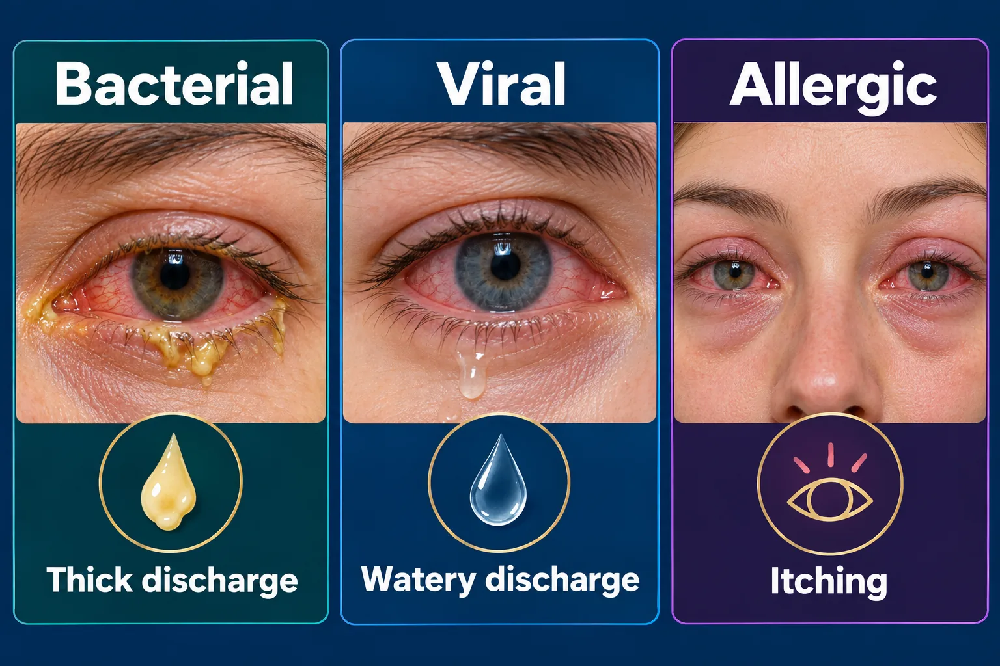

ABSN STUDY HUB · VISUAL STUDY CARD
Conjunctivitis

Course labels and notes from the original graphic, arranged into readable sections. The illustration is schematic.
Course overview
- CONJUNCTIVITIS — TELL THEM APART BY THE DISCHARGE
- Same red eye, three different causes. The discharge is the whole question.
🚨 THE ONE THAT IS NOT CONJUNCTIVITIS
- Pain, light sensitivity or blurred vision means it is not simple pink eye — that eye goes to a provider today.
Bacterial
- Viral
- ✨
- Allergic
- Thick yellow-green pus Lids crusted shut on waking
- Watery, clear, runs Often with a cold
- Stringy and clear — itches Both eyes, seasonal
BACTERIAL
- Antibiotic drops or ointment Back to school 24 h after starting Warm compress lifts the crust One eye first, then the other
VIRAL
- No antibiotic — it will not help Cool compress, comfort only Very contagious for 10 to 14 days Adenovirus, often after a cold
ALLERGIC
- Antihistamine drops Not contagious — no school rule Cool compress, remove the trigger Itching is the giveaway